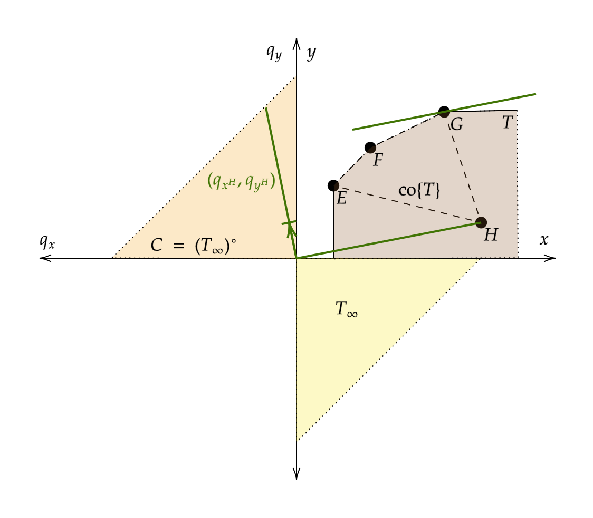
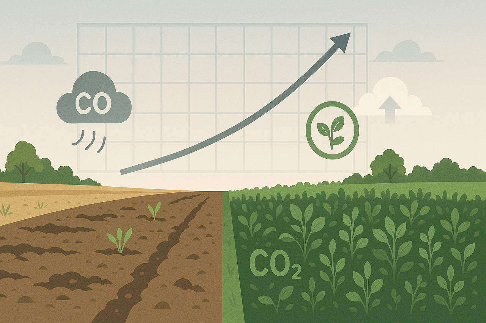
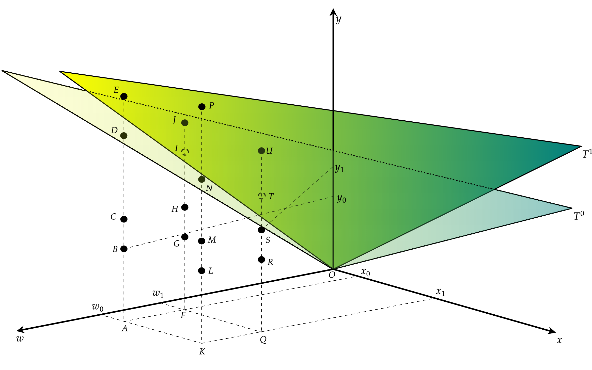

Research & Projects
My research applies economic modeling and empirical methods to questions of productivity, resource use, environmental valuation, climate risk, and policy design.

Job Market Paper
Pricing Agricultural Environmental Services Under Policy-Consistent Normalizations
This paper studies how conservation programs value environmental services when policy objectives differ. Practice-based programs compensate farmers for adopting specific management practices, while outcome-based programs pay for measured environmental improvements. I develop a duality-based framework to compare the private costs and incentive implications of these designs.
Using Illinois corn production data, the framework estimates shadow prices for carbon sequestration, greenhouse gas abatement, and erosion control. The results show how policy normalization changes the economic value assigned to environmental outcomes and provides a consistent basis for designing incentives aligned with measurable goals.

Published Article
Carbon Services from Cover-Crop Adoption
This study estimates the economic value of carbon services from cover-crop adoption, including carbon sequestration and greenhouse gas reductions. Using a data envelopment analysis framework and the dual representation of production technology, we compare environmental service values across cover-crop and non-cover-crop fields.
The paper finds carbon sequestration and greenhouse gas emission reductions from cover-crop fields valued at USD 17.88 and USD 9.42 per acre, respectively, and compares those values with incentive payments for sustainable practice adoption.

Working Paper
Role of Adaptation to Climate Change in Agricultural Total Factor Productivity
This project examines how weather risk and adaptation strategies affect productivity over time. As heat, drought, and intense precipitation become more frequent, producers and policymakers need evidence on whether conservation and adaptation practices can reduce productivity losses and strengthen resilience.
The work combines productivity measurement with weather indicators to evaluate how adaptation measures change economic performance under climate variability.